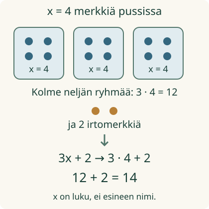

<link rel="stylesheet" href="lesson.css">
<section class="eval-lesson">

<section data-teaching-step="1-frame1" data-lesson-role="teaching-step"><div class="lesson-intro"><h2>Kirjaimen paikalle tulee luku</h2></div>
<p>Pajassa on kolme samanlaista pussia ja kaksi irtomerkkiä. Jokaisessa pussissa on x merkkiä. Loikka tietää, että x = 4. Montako merkkiä on yhteensä?</p>
<p><strong>Tavoitteesi:</strong> sijoitat annetun luvun kirjaimen paikalle ja lasket lausekkeen arvon.</p></section>
<section data-teaching-step="1-frame2" data-lesson-role="teaching-step"><h3>Esineistä laskuksi</h3>
<p>Tee kolme neljän merkin ryhmää. Lisää kaksi irtomerkkiä. Kirjoitus 3x + 2 kuvaa samaa rakennetta. x tarkoittaa merkkien <strong>lukumäärää yhdessä pussissa</strong>.</p>
<figure data-lesson-role="worked-example"></figure></section>


<section data-teaching-step="2" data-lesson-role="teaching-step">
<h3>Esimerkki: 3x ei ole 34</h3>
<p>Kun x = 4, saadaan <strong>3 · 4 + 2 = 12 + 2 = 14</strong>. Luku ja kirjain vierekkäin tarkoittavat kertolaskua. Numerot eivät vain asetu peräkkäin. Kertolasku tehdään ennen yhteenlaskua.</p>
</section>


<section data-teaching-step="3" data-lesson-role="teaching-step">
<section data-lesson-role="question"><h3>Ajattelutauko</h3><p>Onko 3(x + 2) sama lasku?</p><details data-lesson-role="answer"><summary>Paljasta ajatus</summary><p>Ei tässä. Kun x = 4, sulkeissa on 4 + 2 = 6. Kolme kuuden ryhmää antaa 18. Alkuperäisessä laskussa kaksi irtomerkkiä lisättiin vain kerran.</p></details></section>
</section>


<section data-evaluate aria-label="Sijoita ja laske"><section data-teaching-step="4-1" data-lesson-role="teaching-step"><h3>Kokeile mallin vaiheita</h3><p>Vaihda yhden pussin määrää. Etene sitten sijoituksesta osalaskuun ja koko arvoon.</p>
<label>Mallin annettu luku x<select data-demo-x disabled><option>2</option><option>3</option><option selected>4</option><option>5</option><option>6</option></select></label><div class="eval-picture" data-picture role="img" aria-label="Kolme neljän merkin ryhmää ja kaksi irtomerkkiä"></div><p data-demo-text>3 · 4 + 2 = 14.</p><button type="button" data-next-step disabled>Näytä seuraava vaihe</button><button type="button" data-demo-reset disabled>Mallin alkuun</button></section>
<section data-teaching-step="4-2" data-lesson-role="teaching-step"><h3>Esimerkki: sulut pitävät summan yhdessä</h3><p>Laske 2(a + 5), kun a = 3. Ensin sijoitus: <strong>2 · (3 + 5)</strong>. Sulkeiden arvo on 8. Sitten 2 · 8 = 16. Lasku 2 · 3 + 5 antaisi 11: siinä vain kolmonen kerrottaisiin.</p></section>
<section data-teaching-step="4-3" data-lesson-role="teaching-step" data-audience-columns><div data-visual-column><h3>Laske itse kaksi vaihetta</h3>
<p>Annettu luku ja sijoitettu lasku näkyvät alla. Kirjoita nimetyn osalaskun arvo ja koko lausekkeen arvo. Voit täyttää kentät kummassa järjestyksessä vain.</p>
<label>Lasku<select data-case disabled><option value="linear">Kolme ryhmää ja kaksi lisää</option><option value="paren">Kaksi kokonaista summaa</option><option value="signed">Lisäkokeilu: negatiivinen luku</option><option value="fare">Siirto: annettu hinnasto</option></select></label>
<p><strong data-expression>3x + 2, kun x = 4</strong></p>
<p>Sijoitettuna: <strong data-substitution>3 · 4 + 2</strong></p></div><div data-response-column><label><span data-part-label>Kertolaskun arvo 3 · 4</span><input data-part type="text" inputmode="decimal" maxlength="16" disabled></label>
<label>Koko lausekkeen arvo<input data-total type="text" inputmode="decimal" maxlength="16" disabled></label>
<button type="button" data-check disabled>Tarkista lasku</button>
<button type="button" data-clear disabled>Tyhjennä luvut</button>
<output data-feedback data-verdict="neutral" aria-live="polite">Voit laskea samat vaiheet paperille yllä olevien esimerkkien avulla.</output>
<details data-lesson-role="hint"><summary>Vihje tähän laskuun</summary><p data-help>3x tarkoittaa 3 · x. Laske ensin 3 · 4, sitten lisää 2.</p></details></div></section></section>


<section data-teaching-step="5" data-lesson-role="teaching-step">
<h3>Siirto: hinnasto on jo annettu</h3><p>Matkan hinta on tässä esimerkissä 3 + 2k euroa, kun matka on k kilometriä. Viidellä kilometrillä k = 5: <strong>3 + 2 · 5 = 3 + 10 = 13 euroa</strong>. Aloitusmaksu 3 euroa lisätään vain kerran. Kaavaa ei tarvitse keksiä itse.</p>
</section>


<section data-teaching-step="6" data-lesson-role="teaching-step">
<details data-lesson-role="teaching-step"><summary>Lisäkokeilu: miinusmerkki mukaan</summary><p>Kun x = −2, lausekkeesta 4x + 9 tulee 4 · (−2) + 9. Neljä kertaa −2 on −8. Sitten −8 + 9 = 1. Sulut pitävät koko negatiivisen luvun yhdessä. Negatiivista lukua ei kuvata negatiivisina fyysisinä merkkeinä.</p></details>
</section>

<details class="teacher" data-lesson-role="teacher-note"><summary>Opettajalle ja ilman näyttöä</summary><p>Kanoninen luokka-aste on 7–9, rooli procedure/atomic. Vaadittu M79-VAR-01 antaa kirjaimen lukumerkityksen. M-EXPR-01 on vahva tuki, ei lisätty portti. Laskujärjestys avataan tässä. Negatiivinen kokeilu käyttää etumerkillisiä kokonaislukuja; INT-MUL/INT-ADD ovat Liten ilmoitettuja tukitarpeita, eivät uusia pakollisia esitietoja.</p><p>Offline: aseta sama annettu merkkimäärä kolmeen kuoreen ja kaksi merkkiä erilleen. Liitä jokaiseen laskuriviin kuvan vastaava osa. Vertaa sitten kahta kuorta, joissa kummassakin on a + 5 merkkiä. Lapsen ei tarvitse nimetä esineitä tai kuitata puheella.</p><p>Numerokentät täydentävät yhden ohjatun laskuketjun. Ne eivät osoita vapaata symbolisen sijoituksen kirjoittamista, itsenäistä tai viivästettyä hallintaa. Muitakin laskutapoja voi käyttää ja perustella paperilla. Positiivinen kuvamalli ja erillinen lasku ovat eri tehtäviä; mallin vaihtaminen ei muuta laskuvastausta. Ei pisteitä tai henkilöhistoriaa. Ilman JavaScriptiä esimerkit, kuva ja paperiohje toimivat.</p></details>

<section data-teaching-step="7" data-lesson-role="teaching-step">
<section data-lesson-role="question"><h2>Lopuksi</h2><p>Kun lausekkeessa 3x + 2 annetaan x = 4, mikä korvaa kirjaimen? Miksi laskussa näkyy kertomerkki?</p><details data-lesson-role="answer"><summary>Paljasta ratkaisu</summary><p>Nelonen korvaa x:n. 3x tarkoittaa kolmea kertaa x, joten saadaan 3 · 4 + 2.</p></details></section>
</section>

</section>
